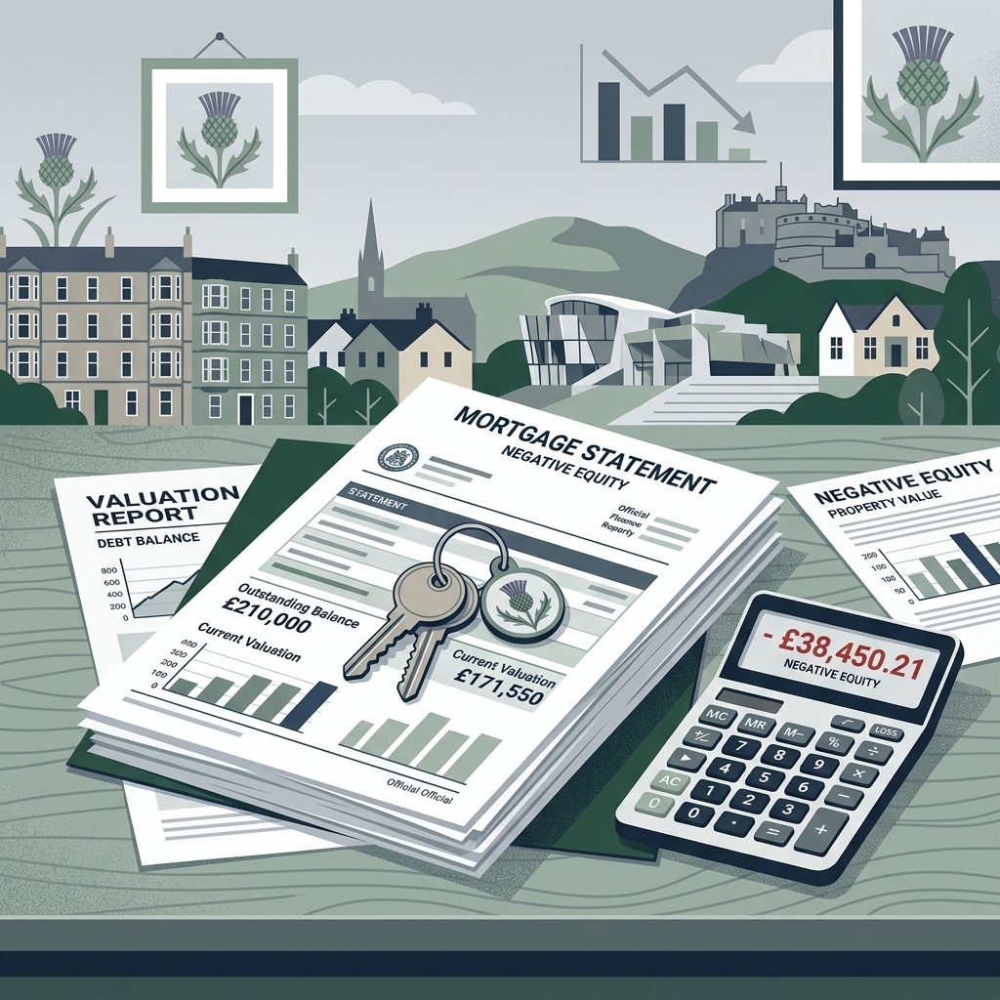
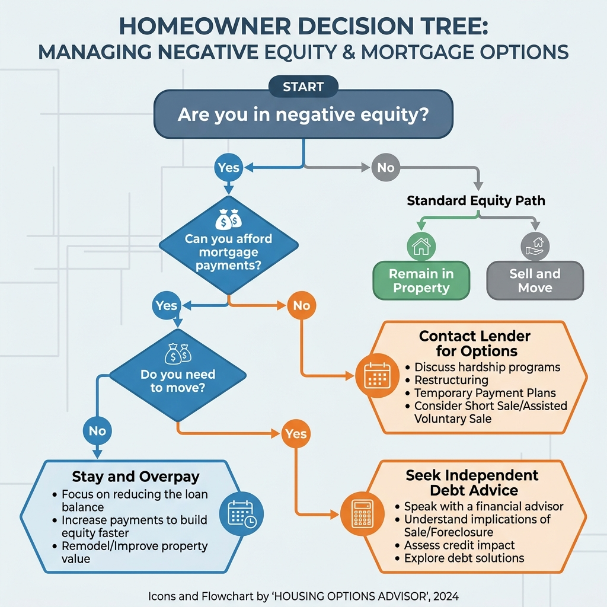

Can You Sell a House With Negative Equity in Scotland?

The short answer
Yes, you can sell a house with negative equity in Scotland, but it is much more complicated than a standard sale. Because the sale price will not cover the outstanding mortgage, your lender will usually have to agree to the sale and agree on how you will repay the remaining debt (the shortfall). You cannot simply sell the property and walk away from the remaining mortgage balance.
What negative equity means
Negative equity occurs when the current market value of your property is less than the total amount you owe on your mortgage (and any other loans secured against the house).
Negative equity versus having little equity
Having "little equity" means your house is worth slightly more than your mortgage. You can sell, but after paying estate agent fees, solicitor costs, and the mortgage, you may walk away with nothing. "Negative equity" means the sale price itself won't even cover the mortgage balance, let alone the selling fees.
Negative equity versus mortgage arrears
Negative equity is about the property's value compared to the loan size. Mortgage arrears occur when you fall behind on your monthly repayments. You can be in negative equity but have a perfect payment record. However, if you have both negative equity and mortgage arrears, your situation is much more urgent.
Negative equity with an additional secured loan
If you have a second mortgage or a secured loan, this debt must be added to your primary mortgage when calculating equity. Both lenders hold a "standard security" over your Scottish property and must normally be repaid when you sell.
How to calculate whether you are in negative equity
Obtain the current mortgage redemption figure
Do not rely on your annual statement. Contact your lender and ask for a current "redemption statement." This will include the outstanding capital, accrued interest, and any early repayment charges (ERCs).
Estimate a realistic selling price
You need a Home Report to sell on the open market in Scotland. The surveyor's valuation is the most realistic guide. Do not use inflated estate-agent asking prices for your calculation.
Include the costs of selling
Selling costs money. You must deduct estate agent fees, solicitor conveyancing fees, and the cost of the Home Report itself.
Calculate the potential shortfall
MINUS Mortgage Redemption Figure (including capital, interest & ERCs):
MINUS Additional Secured Borrowing:
MINUS Estate Agent or Auction Fees:
MINUS Legal & Selling Costs (Solicitor, Home Report):
EQUALS Estimated Equity or Shortfall
Worked negative-equity examples
Hypothetical Example 1: Small shortfall created by selling costs
Scenario: The property value covers the mortgage, but selling costs push the seller into a deficit.
- Estimated Sale Price: £150,000
- Mortgage Redemption: - £148,000
- Estate Agent Fees: - £1,800
- Solicitor & Home Report: - £1,500
- Shortfall: - £1,300
Action: The seller must pay the £1,300 shortfall from personal savings to their solicitor before settlement.
Hypothetical Example 2: Significant negative equity requiring lender agreement
Scenario: Property value has fallen significantly below the mortgage balance.
- Estimated Sale Price: £120,000
- Mortgage Redemption: - £130,000
- Selling Costs (Agent/Legal): - £2,500
- Shortfall: - £12,500
Action: The seller cannot afford this from savings. They must contact their lender to request a "voluntary sale with a shortfall" and negotiate an unsecured repayment plan for the £12,500 before putting the house on the market.
Hypothetical Example 3: First mortgage plus a secured loan
Scenario: The seller took out a secured home improvement loan.
- Estimated Sale Price: £180,000
- 1st Mortgage Redemption: - £165,000
- 2nd Secured Loan Redemption: - £25,000
- Selling Costs: - £3,000
- Shortfall: - £13,000
Action: Both the primary lender and the second charge holder must be satisfied. The seller needs independent debt advice to negotiate how the £13,000 shortfall will be handled.
Hypothetical Example 4: The effect of a fast direct offer
Scenario: The seller needs a guaranteed fast sale and asks a direct buyer, knowing the offer will be below market value.
- Open Market Sale: Price £100,000 - Mortgage £102,000 - Costs £2,000 = Shortfall £4,000
- Direct Cash Offer: Offer £85,000 - Mortgage £102,000 - Costs £800 = Shortfall £17,800
Action: While the direct sale is faster and has no agent fees, it increases the shortfall significantly. The seller must decide if speed is worth the larger unsecured debt, and must ensure the lender will actually agree to a £17,800 shortfall.
Can you legally sell for less than the mortgage balance?
Legally, you own the property. However, the lender holds a "Standard Security" over the title deeds at the Registers of Scotland. A buyer's solicitor will not transfer funds unless your solicitor guarantees this security will be discharged (removed). If the sale funds don't clear the debt, your solicitor cannot discharge the security without the lender's explicit permission.
Why your mortgage lender’s agreement matters
Because the lender's security must be discharged for the buyer to take clear title, the lender controls whether the sale can proceed. If you cannot pay the shortfall from savings, you must ask the lender for permission to sell for less than the outstanding balance (sometimes called a "voluntary sale with a shortfall").
What may happen to the mortgage shortfall?
Pay the difference from savings
If you have savings, you can transfer the shortfall amount to your solicitor before the Date of Entry (settlement). The solicitor combines this with the buyer's funds to fully repay the lender.
Agree a repayment arrangement with the lender
Some lenders may allow the sale and convert the shortfall into an unsecured personal loan. You will need to negotiate this before concluding missives, and they will assess your affordability.
Transfer or port borrowing where the lender permits
If you are moving to another property, some lenders offer "negative equity mortgages" that allow you to transfer the shortfall to your new home's mortgage. These are rare and have strict criteria.
Delay the sale and reduce the mortgage balance
If you don't urgently need to move, the safest option is often to stay put. Continue making your monthly payments (or overpay if your lender allows it without penalty) until your balance drops below the property's value.
Seek formal debt advice about wider options
If the shortfall is large and you cannot pay it, you must seek independent, free debt advice to explore formal options.
Independent Financial & Debt Help
If you are in negative equity, facing mortgage arrears, or your lender is threatening repossession, you should seek free, independent advice immediately. Never pay a commercial company for debt advice when free charities are available.
- MoneyHelper: Free guidance on mortgages and negative equity.
- National Debtline Scotland: Free, confidential debt advice.
- Citizens Advice Scotland: Support with housing and financial difficulties.
- StepChange: Charity offering comprehensive debt solutions.
What to do before putting the property on the market
Speak to the lender
Never put a negative-equity property on the market without speaking to your lender first.
Obtain independent debt or mortgage advice
A regulated financial adviser or free debt charity can help you understand all your options safely.
Ask a Scottish solicitor for a redemption estimate
Your solicitor will handle the legal discharge. Ask them to verify exactly what funds they need to clear the title.
Establish the property’s realistic value
Get a realistic valuation, perhaps through a Home Report or three independent local agent appraisals.
Review early-repayment charges and secured debts
Factor in any ERCs and check if you have forgotten about older secured loans (like home improvement loans).
Can a cash buyer purchase a negative-equity property?
Yes, a cash property buyer can purchase a house in negative equity, provided the lender agrees to the shortfall arrangement or you have savings to cover the difference. A cash buyer provides speed and certainty, but they cannot magically remove the mortgage debt. The lender must still be satisfied.
Why a fast offer may increase the shortfall
A direct cash buyer will purchase your property for less than its open-market value in exchange for a fast, guaranteed sale. Because the offer is lower, the gap between the sale price and your mortgage balance (the shortfall) will be larger. You must carefully calculate if you can afford this increased shortfall.

Options Comparison Table
| Option | How it works | Potential advantage | Main risk | Who must approve | Best suited to | Immediate next step |
|---|---|---|---|---|---|---|
| Pay shortfall from savings | Use personal cash to cover the difference on settlement. | Clean break; sale proceeds normally. | Depletes your savings. | Solicitor | Those with sufficient accessible cash. | Ask solicitor for final settlement figure. |
| Lender shortfall arrangement | Lender converts shortfall to an unsecured loan. | Allows you to sell and move. | Lender may refuse; you remain in debt. | Mortgage Lender | Those who must move but have no savings. | Contact lender's support team. |
| Porting / Negative Equity Mortgage | Transfer the shortfall to a new mortgage on a new property. | Allows you to move house. | Strict lending criteria; higher interest rates. | Regulated Adviser | Those moving to a similarly priced area. | Speak to a regulated financial adviser. |
| Stay and overpay | Remain in property and aggressively pay down capital. | Clears negative equity safely over time. | You cannot move until equity is restored. | Yourself | Those who do not urgently need to move. | Check lender's overpayment limits. |
| Open Market Sale | Sell via an estate agent for highest possible price. | Minimizes the shortfall amount. | Can take months; sales can fall through. | Estate Agent | Those wanting to minimize debt with no strict deadline. | Commission a Home Report. |
| Direct Cash Buyer | Sell quickly off-market at a discount. | Fast, certain completion date. | Increases the size of the shortfall significantly. | Lender / Direct Buyer | Those requiring extreme speed who can manage a larger shortfall. | Calculate net shortfall carefully. |
| Formal Debt Solutions | e.g. Trust Deed, Sequestration. | Provides legal protection from creditors. | Severe impact on credit rating; potential loss of home. | Regulated Debt Adviser | Those with unmanageable debt and arrears. | Contact National Debtline Scotland. |
Can you move house while in negative equity?
Moving is very difficult. You will usually need cash savings to clear the shortfall on the old house, plus a deposit and fees for the new house. Rare "negative equity mortgages" exist, but require independent financial advice.
Should you rent the property out instead?
If you need to move, you could ask your lender for "Consent to Let." You rent out the property to cover the mortgage payments and rent elsewhere yourself. The lender is not obliged to agree, and you will become a landlord with legal responsibilities.
Negative equity during separation or divorce
If you are separating and have a joint mortgage, you are both "jointly and severally liable" for the whole debt. If you sell at a shortfall, the lender can pursue either or both of you for the remaining balance. See our guide on selling a property after separation.
Negative equity and mortgage arrears
If you are in negative equity and have also fallen behind on payments, your situation is critical. Do not ignore letters from your lender. Contact them immediately to discuss a payment plan and contact National Debtline Scotland.
What if you are at risk of repossession?
If your lender is threatening repossession, selling quickly might seem like the only way out. However, if the sale won't clear the mortgage, the lender might block it anyway. Seek urgent legal and debt advice. You can read more about urgent options when facing repossession.
Questions to ask your lender and solicitor
For the lender:
- What is my exact redemption figure today, including all fees and ERCs?
- Do you offer "voluntary sale with a shortfall" arrangements?
- If I sell at a shortfall, will you convert the remainder into an unsecured loan? What will the interest rate be?
For the solicitor:
- Are there any other standard securities (charges) registered against my title deeds?
- Based on my estimated sale price and redemption figure, exactly how much cash will I need to provide on the Date of Entry?
- What happens if the lender refuses to discharge the security because the funds are short?
Step-by-step action checklist
Frequently asked questions
Can I sell my house for less than the mortgage balance?
Yes, but you require your lender's permission if you cannot pay the shortfall from savings. Your solicitor cannot legally complete the sale without the lender discharging their security.
Does my lender have to approve the sale?
Yes, if the sale funds do not cover the full redemption amount, the lender controls whether their security is discharged. They do not legally have to approve a sale.
What happens to the mortgage shortfall?
It remains your legal debt. You must either pay it from savings on completion, or negotiate with your lender to convert it into an unsecured personal loan, which you will repay over time.
Can a cash buyer purchase a negative-equity property?
Yes, if the lender approves the shortfall or you can fund the difference. However, a lower offer from a cash buyer will increase the total size of your shortfall.
Will a quick sale make the shortfall larger?
Yes. If you sell quickly to a direct buyer below market value, the gap between your sale price and your mortgage debt increases, leaving you with a larger unsecured debt to repay.
Should I rent the property instead?
You can request 'Consent to Let' from your lender, allowing you to move while using rental income to cover the mortgage. The lender is not obliged to agree.
Does negative equity affect my credit score?
Negative equity itself does not affect your credit score. However, if you fall into mortgage arrears or enter a formal debt solution to handle a shortfall, your credit file will be severely impacted.
Where can I obtain free debt advice in Scotland?
You can contact MoneyHelper, National Debtline Scotland, StepChange, or Citizens Advice Scotland for free, independent guidance on handling mortgage shortfalls and arrears.
Request a property assessment only after understanding the shortfall
If you have spoken to your lender, understand your shortfall, and need a fast, chain-free sale, we can provide a no-obligation cash offer. Compare the figures carefully to ensure this is the right route for you. We also buy properties across Scotland if you are selling a house requiring major repairs.